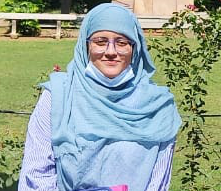

About Me
>Hi, I’m Danish. I work at the intersection of Computational Genomics and Machine Learning under the supervision of Prof. B Jayaram. My main motivation right now is deciphering the biophysical translation of eukaryotic genome sequence-based information into computational signals, thereby, presenting applications with real-world impact. I love the interdisciplinary nature of computational biology as it borrows concepts from physics, chemistry, biology, mathematics, and computer science. Below are some of the topics I am curious about and hope to contribute and develop my projects on.
Topics of interest:
- Biophysical Profiling of Eukaryotic Genome Elements
- Eukaryotic Gene Structure Annotation
- Machine learning in Genome Annotation
- Gene Markers in Early-/Late-onset Alzheimer's Disease Progression
- Spatial/Single-cell -omics to better translate Gene Expression at cellular level
I graduated with a BS in Life Science (Botany, Chemistry, Zoology) at the University of Delhi in 2021 and obtained an MS in Bioinformatics at the Department of Computer Science, Jamia Millia Islamia, India, in 2023.
In my free time, I enjoy reading, writing poetry, and planning my days beforehand.
Contact
Please feel free to contact me for potential collaborations or discussions on my research or for general conversations on the state of machine learning in drug design.
My current local time is .